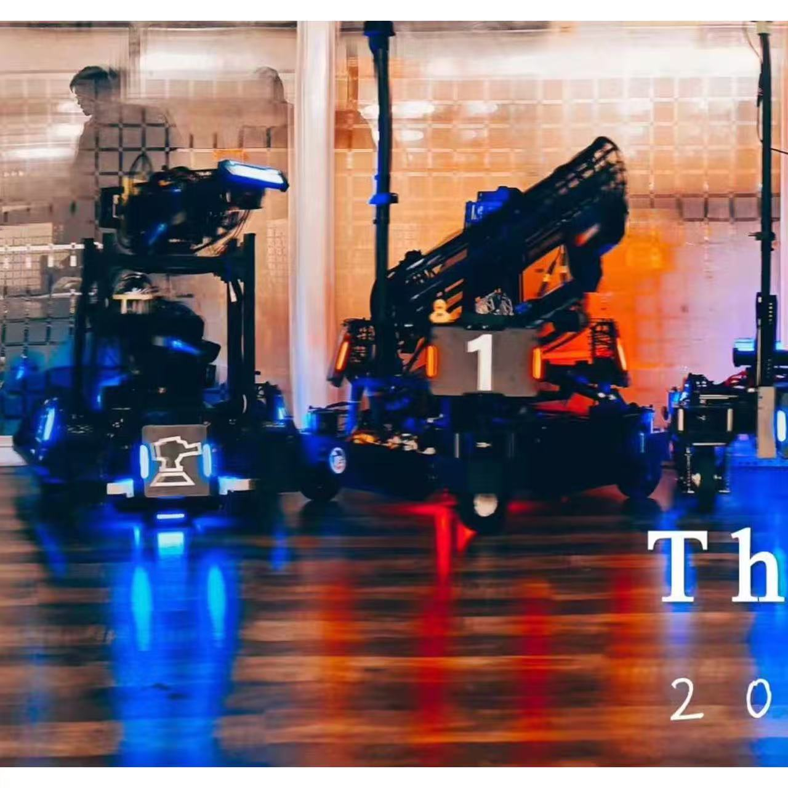
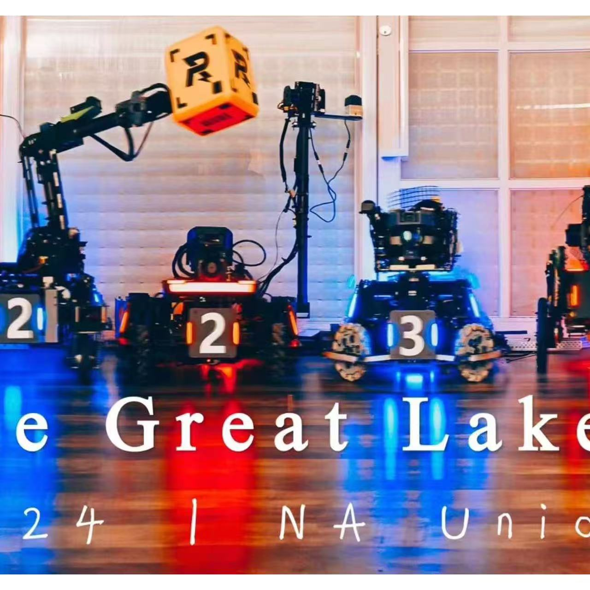
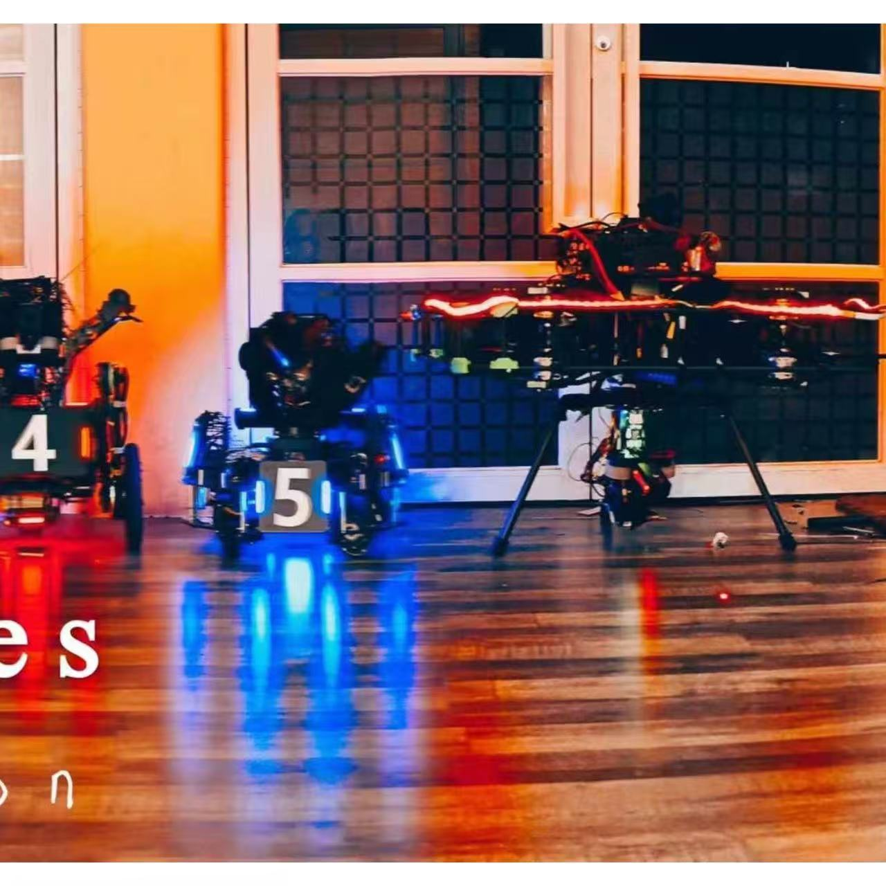

In memory of RoboMaster 2024


This project focuses on the mechanical architecture and system integration of a RoboMaster Hero-class catapult robot. I was responsible for key mechanical subsystems, packaging, manufacturability-oriented iteration, and competition-oriented integration, with an emphasis on structural stiffness, maintainability, and fast turnaround during testing and matches.